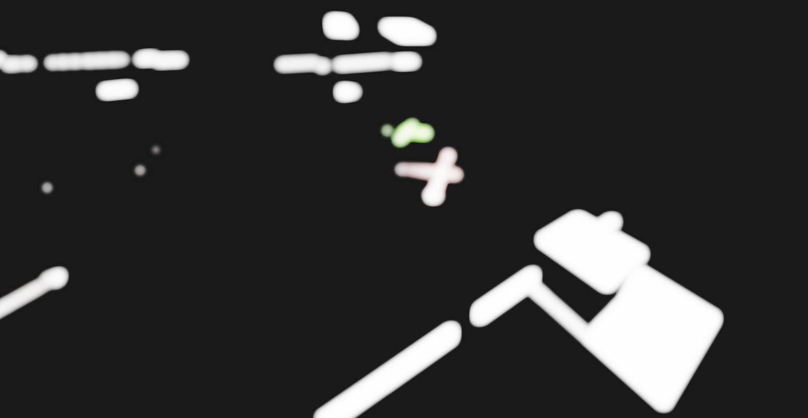
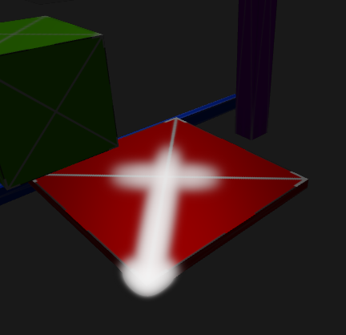
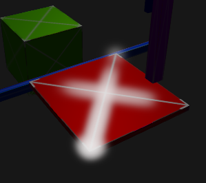
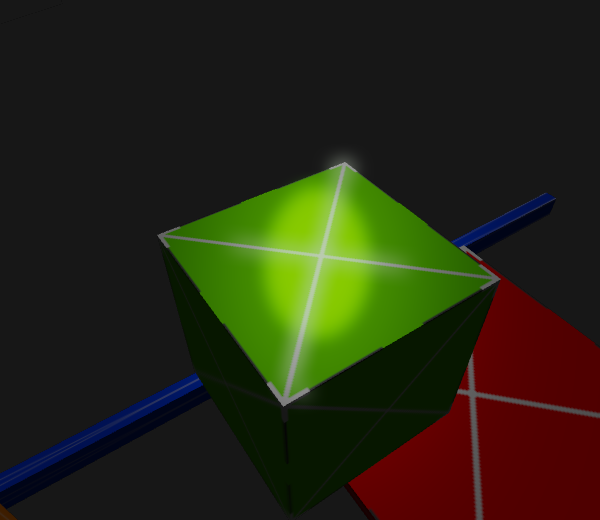
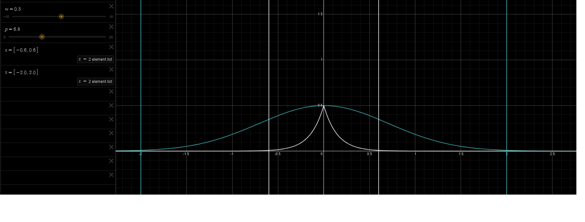
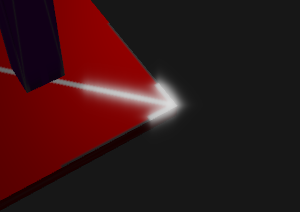
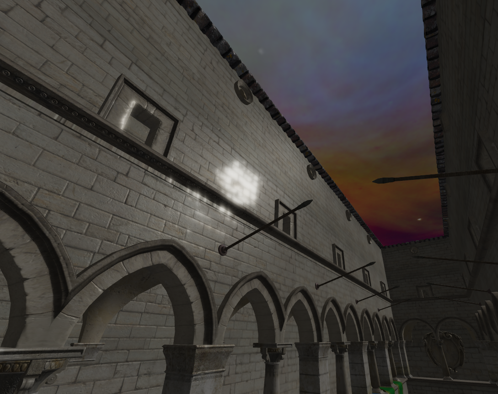
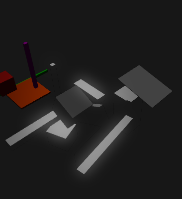

Bloom Problems
I am implementing bloom. I was following the learnopengl tutorial, but I didn't like the way bloom is done there. What I don't like about it is the bloom passes. I feel like bloom can be done in two passes. One for vertical blur and another for horizontal or vice versa.
learnopengl uses ping pong buffers that work something like this psuedocode.
bindFramebuffer(pingPong[0]);
bindTexture(intenseColorTexture);
bindShader(fullscreen);
render;
bindShader(fullscreenBlur);
for (totalBlurPasses) {
bindFramebuffer(pingPong[1]);
bindTexture(pingPong[0].texture);
setUniform(verticalBlur);
render;
bindFramebuffer(pingPong[0]);
bindTexture(pingPong[1].texture);
setUniform(horizontalBlur);
render;
}
At the end of it all, pingPong[0].texture ends up being a heavily blurred version of the original intenseColorTexture. The first render of the loop performs a gaussian blur vertically, the second applies the same blur kernel horizontally.
My issue, of course, is totalBlurPasses. What is this really accomplishing that can't be done in just a single iteration of that loop? It all seems to be a matter of kernel size and weights. Whether you'd get the exact same effect is unclear to me, but I don't like the bloom samples I see on learnopengl, so I don't care much about achieving that exact look.
So, I first tried out a set of weights that I generated just to see the blur it produced.
const float weight[20] = float[](
1.0000, 0.9900, 0.9607, 0.9139, 0.8521, 0.7788, 0.6976, 0.6126, 0.5272,
0.4448, 0.3678, 0.2981, 0.2369, 0.1845, 0.1408, 0.1053, 0.0773, 0.0555,
0.0391, 0.0270);
These are just 20 evenly split evaluations of f(x)=exp(-(x*x)) starting at x=0 and going to x=2*(19/20). At first I was seeing a lot of squares. I initially thought my kernel was shit, then I realized I was only sampling the first 5 pixels and not the full 20 becuase brain. This actually doesn't look completely terrible, but far from acceptable. This picture is just the result of the blured intense colors after a reinhard post process (ignore bad tonemapping, kthx).

It seems like the high central weight really blows out the center interior region of the bloom. Not only that, but those little dots on the left flicker in and out as the camera moves. Granted the setup (test scene and lighting) is quite bad. Trotzdem, the flickering due to fireflies seems like a problem.
Just to tame things down, I decided to make some sliders to control all of the variables I need to experiment with kernel weights and all that jazz. This made finding much more plausible blur kernels easy to find. Sorry the video is so small. Blame my version of obs for automatically downscaling.
The text isn't too readable. There are three parameters sampleMax, weightScale, and sampleCount. On the curve f(x) * weightScale, sampleCount samples are taken from x=0 to x=maxSample in both directions. f(x) being the simplest gaussian distribution function exp(-(x*x)).
I should also mention a few specifics about how the blurred buffer makes its way to the backbuffer. My rendering pipeline is able to render multiple scenes layered on top of each other. I go about this by first clearing the backbuffer. Before rendering a scene to the backbuffer, it is rendered to an intermediate buffer that is cleared with an alpha value of 0. Once everything in the scene has been rendered, the scene buffer is blended with the backbuffer using standard linear interpolation blending.
This presents a problem for bloom, because I also need to worry about the alpha values when performing blurring and blending that blurred texture with the original hdr texture. Here's a dramatic example of what I mean.


My choice to also blend the alpha channel results in pixels with no alpha blending showing the contribution of the blurred intense color much more significantly. Before addressing my clearly terrible bloom, I want to address this alpha blending problem. Instead of performing the bloom blend on every layer, I am going to save it until the very end so alpha can be eliminated from the problem.

It only took a bit more than a day, but now that problem has been addressed. There were a few patterns built into my rendering pipeline that made it a bit hard to elimate the problem. Stuff like performing tonemapping before blending a layer. I've lost some configurability, but, tbh, I haven't used that configurability, so worrying about it would be no good.
Now I can adress the other issue, the clearly ass bloom. I want to give performing multiple blur passes a try just to see what the results are. According to a person in the gp server, I should play with the standard deviation of my blur function. The blur function I've gone with doesn't have a standard deviation parameter, so it looks like I am going to have to play with my blur function.
As I continue working on this, I am realizing that getting "good" bloom is going to be highly parameter and scene dependent. One thing that I really don't like about my current implementation is how it blows up the fragments where intense colors are.

I think it would be better if already intense pixels maintained their value and had a bloom effect that recedes from them. That's harder to achieve then it sounds though.
Anyways, I want to play with my blur function. Instead of using the function I was using earlier, I want to use f(x) = exp(-|x*s|)*w, where s is a paramter to make the function more or less pointy at 0 and w determines how high that point is. Essentially, a scaler for the x axis and a scaler for the y axis. This gets rid of the rounded qualities of the function I was using earlier and supplies the rapid falloff directly on fragments adjacent to the intense fragments.

The vertical bars here are indicating what I think will be the max sample value I go up to in my blur kernel. I want that value to get close to 0, but I don't want to let a lot of my samples stay close to 0 because they wouldn't contribute to the bloom and would therefore be a waste of time to compute.


Nevermind. Though it has its own vibe, it's actually harder to get a good bloom with this function. One of the problems that I only realized after seeeing output renders is that this function probably isn't seperable like the gaussian blur. I haven't proved it, nor will I, but I am pretty certain that's the case. I believe that's why the result of the blur in the output renders seems very uneven. So I am going to head back to using a gaussian function.
After experimenting for a bit, I finally have something that provides decent results with the right paramters. I decided to use a normal distribution centered at 0 to perform the blur along with the parameters described earlier. This is really no different than the first function I started with of course, but it does provide another slider to play with.
f(x) = (1 / (stddev * sqrt(2pi)) * exp(-0.5 * (x / stddev)^2)

I like the results with the implementation and parameters used in the above image, so I made a script to generate the weights for the bloom kernel I was was using.
// Only used in the bloom implementation, but here for completeness sake.
let blurCount = 3
// Generate weights.
let sampleMax = 1.8;
let sampleCount = 15;
let weightScale = 0.136;
let standardDeviation = 1.448;
let expScale = 1.0 / (standardDeviation * Math.sqrt(2.0 * Math.PI));
for (let i = 0; i < sampleCount; ++i) {
let x = sampleMax * i / sampleCount;
x = x / standardDeviation;
x = x * x;
console.log(weightScale * expScale * Math.exp(-0.5 * x));
}
/*
0.03746
0.03734
0.03695
0.03632
0.03546
0.03438
0.03311
0.03166
0.03007
0.02837
0.02657
0.02473
0.02285
0.02097
0.01911
*/
I'm pretty surpised by how small these values are and how flat the part of the curve I am sampling is. I suppose having values this small is exactly what I need. I want to avoid "blowing out" the intense color regions as much as I can without having a negative impact on the outward bloom effect.
At the end of all of this, I did end up using multiple blur passes, but only 3. On the other hand, the size of my blur kernel is 29 fragments. I traded the number of blur passes off for a larger kernel size. Using multiple blur passes is very important though, because it's what gives the bloom a sharp tip and long tail. Changing the number of blur passes from 0 to 10 produces the following results.